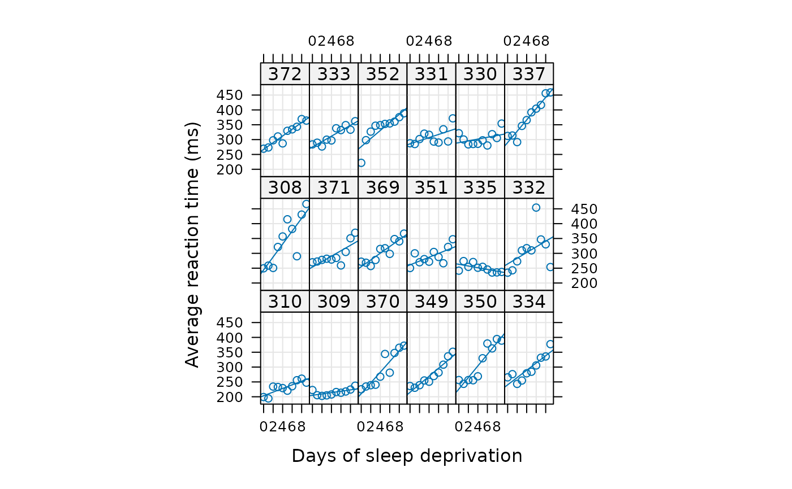

Reaction times in a sleep deprivation study
sleepstudy.RdThe average reaction time per day (in milliseconds) for subjects in a sleep deprivation study.
Days 0-1 were adaptation and training (T1/T2), day 2 was baseline (B); sleep deprivation started after day 2.
Format
A data frame with 180 observations on the following 3 variables.
ReactionAverage reaction time (ms)
DaysNumber of days of sleep deprivation
SubjectSubject number on which the observation was made.
Details
These data are from the study described in Belenky et al. (2003), for the most sleep-deprived group (3 hours time-in-bed) and for the first 10 days of the study, up to the recovery period. The original study analyzed speed (1/(reaction time)) and treated day as a categorical rather than a continuous predictor.
References
Gregory Belenky, Nancy J. Wesensten, David R. Thorne, Maria L. Thomas, Helen C. Sing, Daniel P. Redmond, Michael B. Russo and Thomas J. Balkin (2003) Patterns of performance degradation and restoration during sleep restriction and subsequent recovery: a sleep dose-response study. Journal of Sleep Research 12, 1–12.
Examples
str(sleepstudy)
#> 'data.frame': 180 obs. of 3 variables:
#> $ Reaction: num 250 259 251 321 357 ...
#> $ Days : num 0 1 2 3 4 5 6 7 8 9 ...
#> $ Subject : Factor w/ 18 levels "308","309","310",..: 1 1 1 1 1 1 1 1 1 1 ...
require(lattice)
xyplot(Reaction ~ Days | Subject, sleepstudy, type = c("g","p","r"),
index = function(x,y) coef(lm(y ~ x))[1],
xlab = "Days of sleep deprivation",
ylab = "Average reaction time (ms)", aspect = "xy")

(fm1 <- lmer(Reaction ~ Days + (Days|Subject), sleepstudy, subset=Days>=2))
#> Linear mixed model fit by REML ['lmerMod']
#> Formula: Reaction ~ Days + (Days | Subject)
#> Data: sleepstudy
#> Subset: Days >= 2
#> REML criterion at convergence: 1404.094
#> Random effects:
#> Groups Name Std.Dev. Corr
#> Subject (Intercept) 31.507
#> Days 6.766 -0.25
#> Residual 25.526
#> Number of obs: 144, groups: Subject, 18
#> Fixed Effects:
#> (Intercept) Days
#> 245.10 11.44
## independent model
(fm2 <- lmer(Reaction ~ Days + (1|Subject) + (0+Days|Subject), sleepstudy, subset=Days>=2))
#> Linear mixed model fit by REML ['lmerMod']
#> Formula: Reaction ~ Days + (1 | Subject) + (0 + Days | Subject)
#> Data: sleepstudy
#> Subset: Days >= 2
#> REML criterion at convergence: 1404.626
#> Random effects:
#> Groups Name Std.Dev.
#> Subject (Intercept) 28.843
#> Subject.1 Days 6.285
#> Residual 25.747
#> Number of obs: 144, groups: Subject, 18
#> Fixed Effects:
#> (Intercept) Days
#> 245.10 11.44